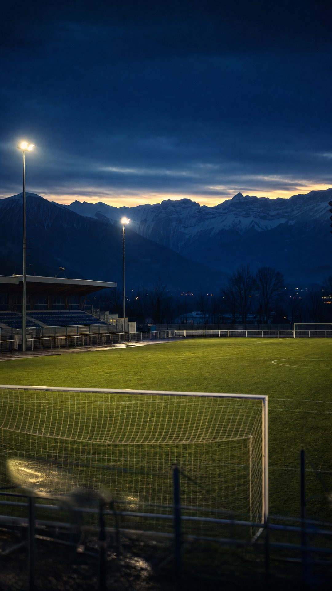
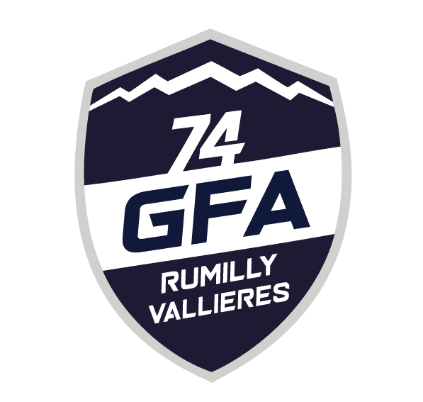
GFA Rumilly-Vallières
Le club peut devenir celui de tout l'Albanais, enraciné en Savoie et jusqu'au Piémont. Ce que je vous propose se mesure comme n'importe quel investissement.
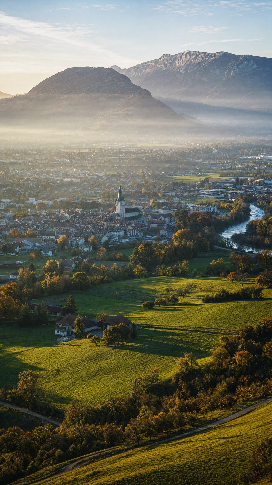
Place-based marketing
Géographie, langue, patrimoine, histoire : la culture de l'Albanais est la seule chose qu'aucun concurrent ne peut copier. Donc le seul argument de vente qu'il ne peut pas égaler.
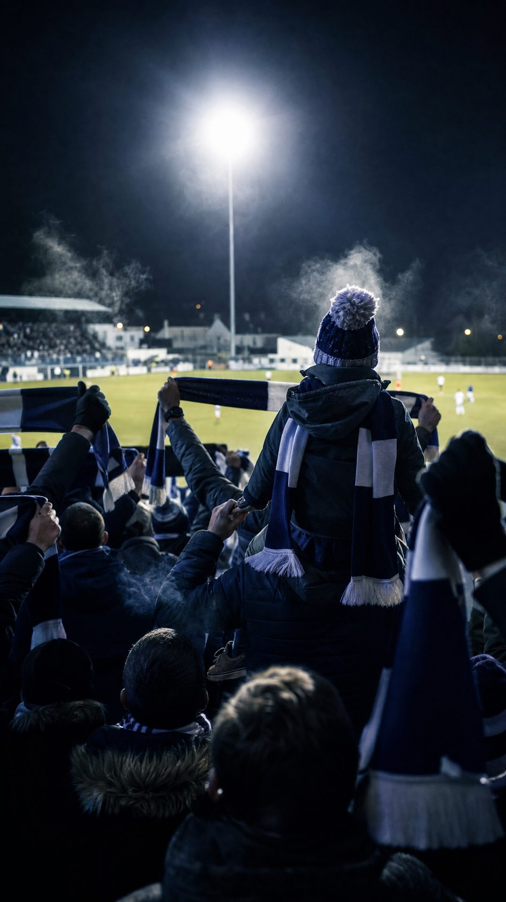
Lifecycle marketing
Chaque supporter et chaque partenaire traverse quatre étapes. Le rôle du club : les faire avancer d'une étape à l'autre, pas répéter la même communication en boucle.
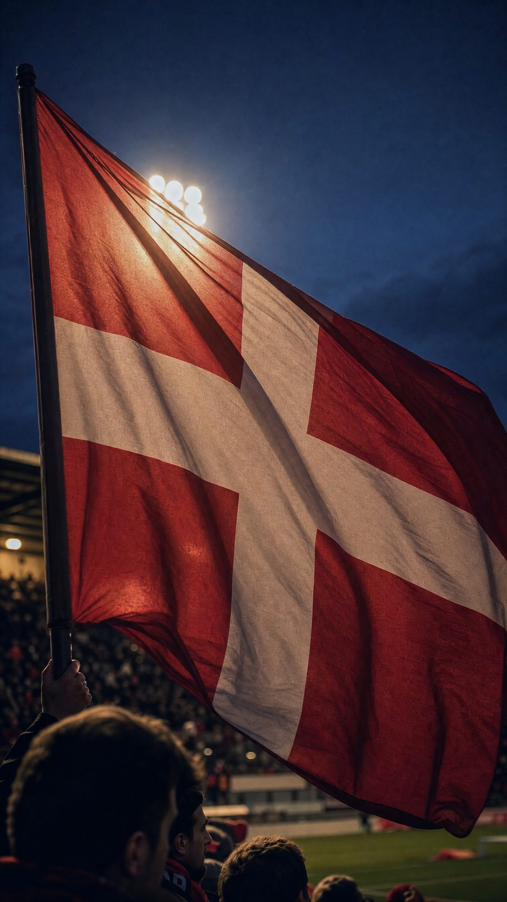
Ça a déjà commencé
Les premières communications du club en langue savoyarde n'ont laissé personne indifférent. Les gens se sont demandé ce que c'était. Ils en ont parlé.
C'est exactement le signal qu'on attend d'une activation identitaire : elle interpelle avant même d'être comprise. L'étape « Découverte » est gagnée.
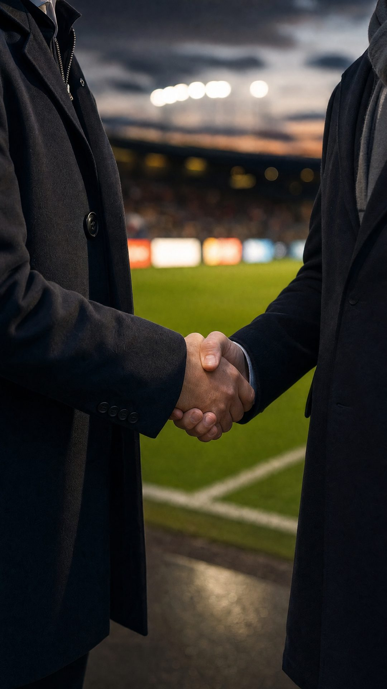
La chaîne, pas des chiffres isolés
On travaille l'identité albanaise du club.Langue, patrimoine, récit du territoire. Une appartenance, pas un logo.
d'intention d'achat de produits du club quand l'attachement augmente.Et l'attachement se construit sur le local, jamais sur un club lointain.
des Français plus enclins à acheter une marque partenaire de leur club local.Le sponsor achète du pouvoir d'achat orienté. C'est pour ça qu'il signe.
Sources : méta-analyse identification / intention d'achat, plusieurs clubs ; étude ALL SPONSORED–CSA, France.
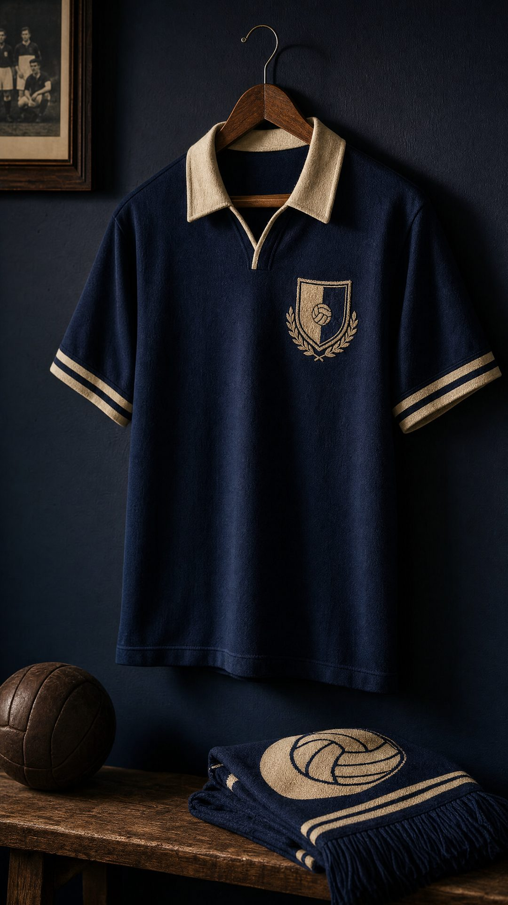
On n'invente rien
Wrexham AFC · Pays de Galles
En un an, après avoir mis l'identité galloise et locale au centre de la marque. Maillot patrimonial épuisé en deux heures. Facteurs multiples, mais l'identité est le socle.
Le Puy Foot 43 → Le Puy-en-Velay FC · 2026
Le club voisin change de nom pour être identifiable : « 43 Auvergne » créait une confusion permanente. Nouveau nom ancré dans le territoire, en même temps que le virage vers la Ligue 3.
Son directeur général : « la majorité des gens ne savent pas de quel Puy on parle ». Le problème était l'identité, pas le niveau sportif.
Pas se battre pour des miettes
Le sport savoyard se partage de toutes petites parts d'un gâteau minuscule, face aux médias sportifs nationaux et européens. L'enjeu n'est pas de prendre la part du voisin : c'est de capter une audience qui ne regarde pas encore le sport savoyard.
Aujourd'hui
Petite part d'un tout petit gâteau.
Objectif
La même part, sur un gâteau bien plus grand. À pourcentage égal, elle vaut objectivement plus.
des 2,5 Md€ du sponsoring sportif français vont déjà au sport amateur. L'argent existe. Ce qui manque, c'est l'audience.
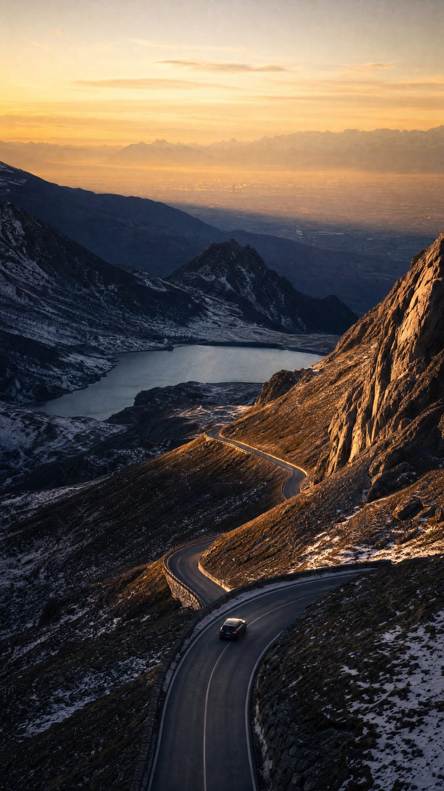
Pas à pas
Convention avec l'Institut de la Langue Savoyarde et point de départ chiffré : spectateurs, licences, partenaires. Sans lui, pas de progrès démontrable dans un an.
Écusson, récit, présence dans les médias locaux et transfrontaliers. On n'est plus un club parmi d'autres en National.
Prouver avec des chiffres que la marque a été vue, et envoyer le bilan en fin de saison. C'est ce suivi qui fait renouveler, et payer plus.
French Tech, Savoy IA, Universitât Sabauda, ALCOTRA : des portes que le club ne peut pas ouvrir seul. Exemple : un financement transfrontalier Chambéry–Turin autour du club.
Un accompagnement
Un chef de projet à disposition, pas seulement un communicant. Une convention signée entre l'Institut et le club, pas un accord personnel.
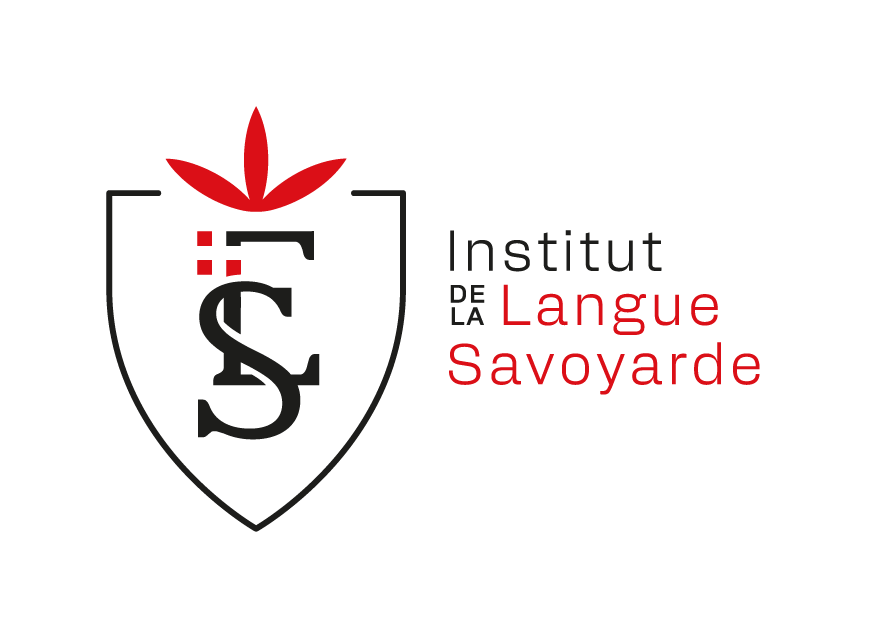
Responsable. La stratégie qui a déjà mis le savoyard dans les communications du club.
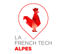
Président, ChambérySept. 2026
Appel d'offres Interreg ALCOTRA remporté sur l'IA, consortium Chambéry, Turin, Vallée d'Aoste.
Président. Sollicité par le Département pour SavoiaExperience (ALCOTRA). Accompagne Dolin à Turin.
Initiateur. Collectif d'entrepreneurs et de chefs d'entreprise savoyards sur les usages de l'IA.
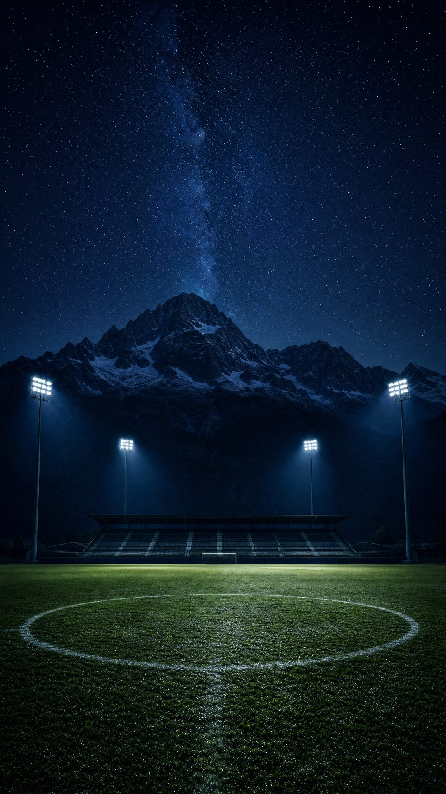
C'est l'actif que personne ne peut nous prendre. À nous d'en faire quelque chose.